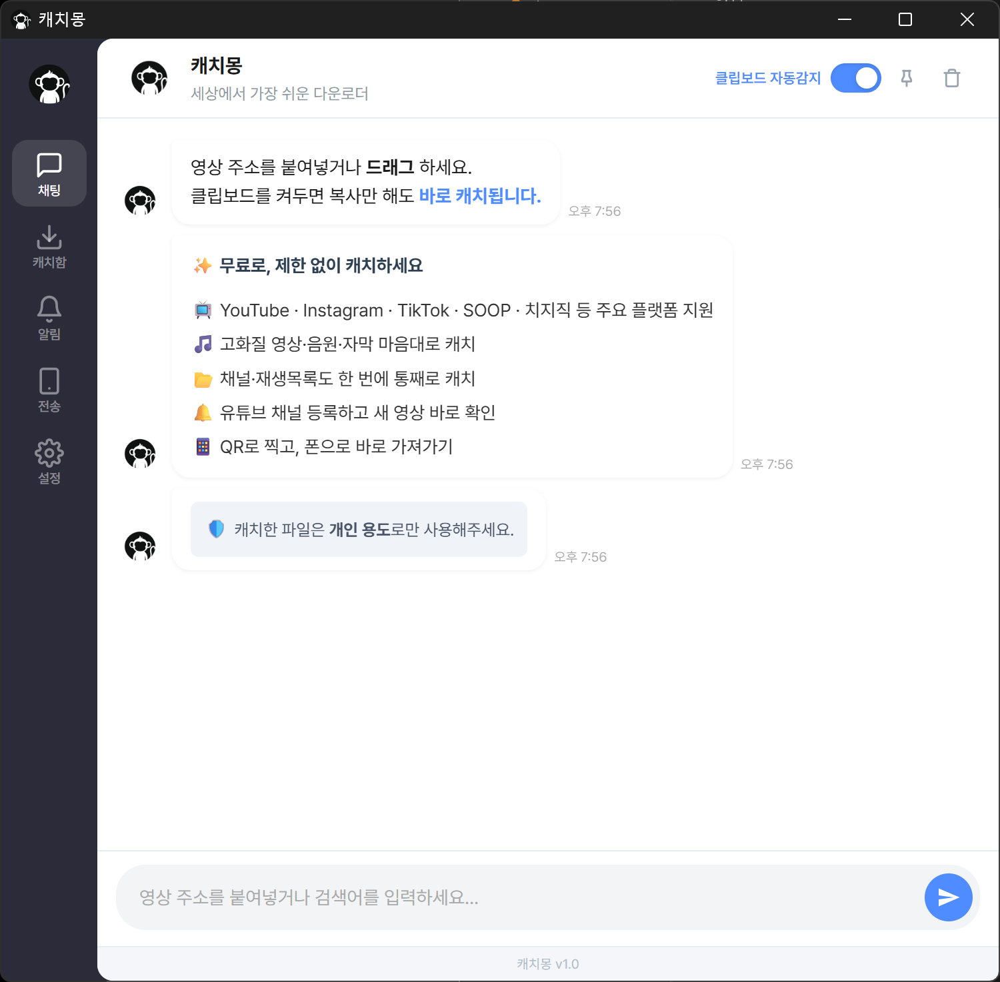

소장하고 싶은 4K 고화질 영상, 운전할 때 들을 차량용 MP3, 어학용 자막까지.
캐치몽 하나면 당신이 겪던 모든 다운로드의 불편함이 완벽하게 해결됩니다.
✅ 100% 무료 · ✅ 회원가입 없음 · ✅ Windows 10/11 전용

친숙한 메신저 화면에서 대화하듯 쉽게 원하는 영상을 저장할 수 있습니다.
유튜브, 인스타그램, 틱톡에서 원하는 영상 링크를 복사하세요. 붙여넣기하거나 클립보드 감지로 바로 시작할 수 있습니다.
복잡한 옵션 없이 필요한 방식만 누르면 바로 다운로드가 시작됩니다. 채널과 재생목록도 한 번에 캐치할 수 있습니다.
PC에 저장한 파일을 QR 코드로 바로 띄워 스마트폰으로 쉽게 옮길 수 있습니다. 케이블이나 복잡한 공유 설정이 필요 없습니다.
📺 YouTube · Instagram · TikTok · SOOP · 치지직 지원
고화질 영상부터 MP3와 자막까지 한 번에 처리할 수 있습니다.
영상 하나씩 받을 필요 없이 강의, 음악, 모음집도 한 번에 저장할 수 있습니다.
즐겨보는 유튜브 채널을 등록해두면 새 영상이 올라왔는지 캐치몽에서 바로 확인할 수 있습니다.
컴퓨터에 저장한 파일을 QR만 찍어서 폰으로 쉽고 빠르게 옮길 수 있습니다.
설치부터 다운로드까지 클릭 몇 번이면 끝납니다.
가장 쉽고 강력한 비디오 다운로더를 무료로 경험해보세요.
Windows 10 / 11 전용 (64bit)